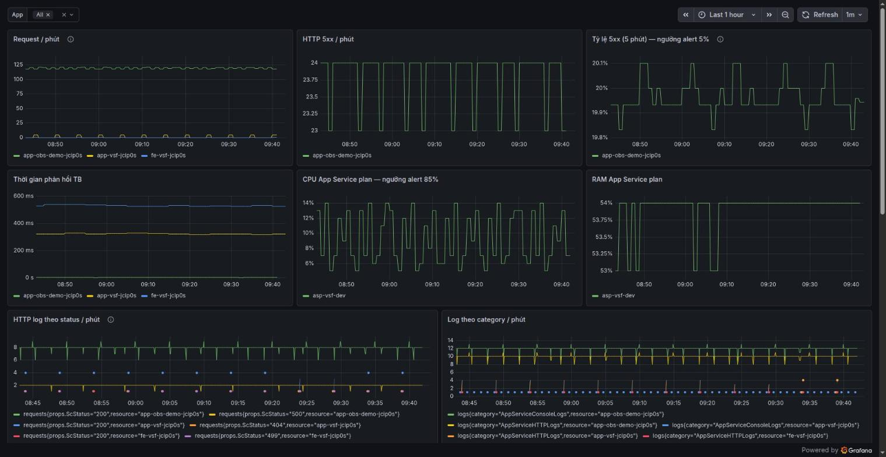
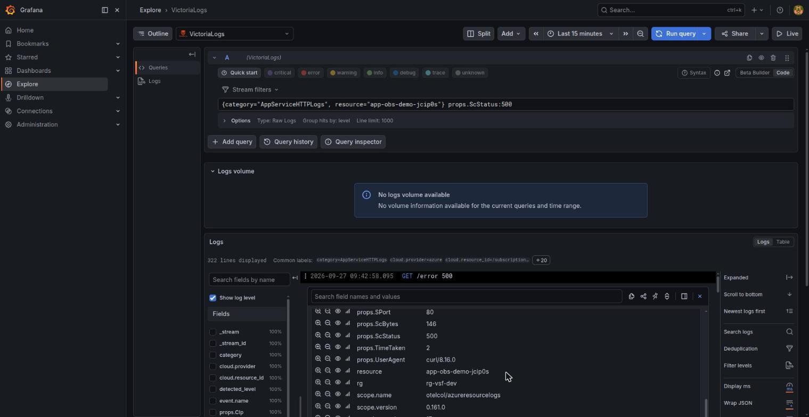
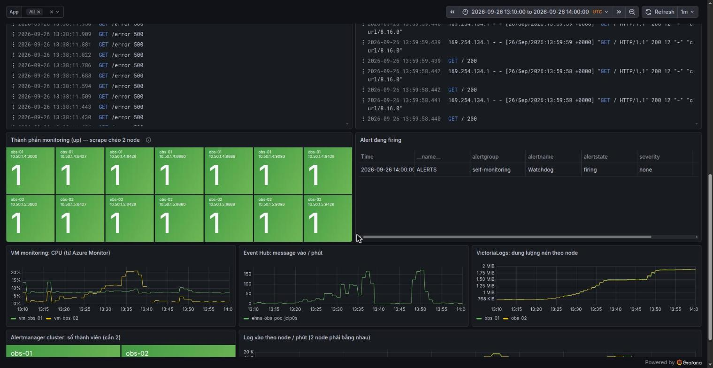
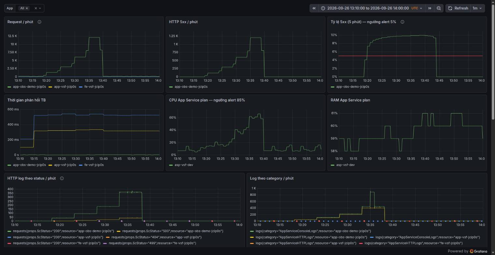

PoC · Azure App Service · 2 VM tự host · Terraform
Monitoring tập trung trên Azure: metrics, log và cảnh báo về một nơi
Bùi Tùng Lâm · số đo PoC ngày 26–27/09/2026
0
log bị mất khi tải tới 200 request/giây
≈ 7′
từ lúc lỗi 5xx vượt 5% tới lúc alert firing trên cả 2 node
≈ 2′
phát hiện mất nguyên 1 VM, VM còn lại vẫn phục vụ
$541
mỗi tháng theo thiết kế, so với ≈ $1.800 của Log Analytics
Bài toán · vì sao làm
Gom metrics và log của Azure về một nơi, không trả tiền theo GB
1NguồnApp Service, APIM, SQL, Storage trên nhiều subscription
→
2Thu thậpOpenTelemetry Collector, một agent cho mọi nguồn
→
3LưuVictoriaMetrics cho metrics, VictoriaLogs cho log
→
4XemGrafana: dashboard và tìm log
→
5Cảnh báovmalert + Alertmanager, gửi Teams và email
Tự host trên 2 VM bằng Docker Compose, hạ tầng bằng Terraform, thay cho Log Analytics / Application Insights
“Chứng minh được luồng App Service → (metrics Azure Monitor + log qua Event Hub) → OTel Collector → VictoriaMetrics/VictoriaLogs → Grafana, và alert; có số đo thật để quyết định có triển khai thật không.”Mục tiêu PoC, nguyên văn docs/plans/active/poc.md
Vì sao không dùng Log Analytics · ADR-0004
Tính tiền theo GB ingest
20 GB log/ngày ≈ $1.800/tháng. Tự host: một nơi xem cả metrics, log, alert; không khoá vào KQL.
Các slide sau đi theo thứ tự: thiết kế, PoC đã dựng, kết quả đo, chi phí, đề xuất.
Thiết kế
v1.2
5 ADR, 11 luồng dữ liệu, 22 sự cố
Lab local
9/9
smoke test trên laptop, 2 node mô phỏng
PoC
2 VM
trên Azure, Central India, theo dõi 3 app
Kết quả
5
nhóm kiểm thử, có số đo và ảnh
Đề xuất
7
điều kiện để triển khai thật
Tổng quan dự án · repo monitor
Bốn chặng: thiết kế, lab, PoC trên Azure, rồi mới triển khai thật
1 · Thiết kế XONGdocs/ · 10–26/09
Kiến trúc v1.0 → v1.2 sau hai vòng rà edge case
5 ADR: mỗi quyết định có lý do và hệ quả
11 luồng dữ liệu F1–F11, ma trận 22 sự cố
7 runbook, hướng dẫn vận hành, onboarding app
Bằng chứngMọi khối YAML trong thiết kế qua validate / -dryRun trên đúng version đã ghim
2 · Lab local XONGlocal/ · 25/09
2 node mô phỏng bằng Docker Compose, không cần Azure
telemetrygen đóng vai app, gửi log và metric qua OTLP
vmagent, vlagent ghi đôi về 2 node
Thử failover: tắt node 1 vẫn query được
Bằng chứngscripts/smoke-test.sh: 9/9 PASS
3 · PoC Azure CÒN MỞpoc/ · 26–27/09
Terraform: 2 VM, Event Hub, Diagnostic Settings, quyền
nằm trong body dạng map; chi tiết HTTP là chuỗi JSON
Phải bật debug exporter xem dữ liệu thật rồi viết lại transform. Tài liệu không đủ.
Kết quả PoC · tóm tắt · docs/poc-ket-qua.md
Sáu câu hỏi của PoC và câu trả lời có số đo
Q1 ĐƯỢC
Thu metrics + log về một nơi, xem và tìm được?
Metrics và log của 3 app về 2 VM; dashboard 17 panel; tìm log theo status, URL, thời gian xử lý
Q2 KHÔNG MẤT
Có mất log không?
Tới 200 request/giây: 113.630 log HTTP khớp số request, 11.103 lỗi 500 khớp số lỗi tạo ra, 2 node bằng nhau
Q3 ĐÚNG · CÒN MỞ
Cảnh báo có đúng và kịp không?
5xx > 5%: alert sau ≈ 7–8,5 phút; mất 1 VM: ≈ 2 phút. Chưa test ít traffic, CPU; chưa nối Teams
Q4 VẪN CHẠY
Mất 1 VM thì sao?
VM còn lại vẫn xem dashboard, tìm log, bắn alert; VM bật lại tự đọc bù: 2.886 = 2.886 log
Q5 DƯ NHIỀU
Hệ thống monitoring có đủ sức?
Ở 200 request/giây, VM D2as_v5 dùng CPU ≤ 10,4%, RAM còn trống ≥ 6,8 GB trên 8 GB
Q6 ĐƯỢC
Hạ tầng có dựng lại được không?
Toàn bộ bằng Terraform, dựng từ số 0; plan sau đó = No changes; một lệnh destroy để dọn
Điểm yếu chính: log từ Azure trễ 1,5–2 phút lúc bình thường, tới 13–15 phút khi tải đột biến (phía Azure). Alert dựa trên metric không bị ảnh hưởng, alert dựa trên log thì có.
Kết quả · luồng dữ liệu
Metrics và log của 3 app về một nơi, tìm được theo từng field

Dashboard App Service PoC lúc bắn 20% lỗi: tỷ lệ 5xx quanh 20%, ngưỡng alert là 5%.

Explore: {category="AppServiceHTTPLogs"} props.ScStatus:500, các field props.* đã tách sẵn.
17/17
panel có dữ liệu, trên cả 2 node
80–130 s
độ trễ log lúc bình thường, không tăng theo tải tới 100 rps
3–5′
có log đầu tiên sau khi bật Diagnostic Settings (tài liệu Microsoft: tới 90′)
4
loại resource có metrics: App Service, plan, VM, Event Hub
Kết quả · cảnh báo · poc/vmalert/rules
20% request lỗi 500: alert firing trên cả hai node sau khoảng 7 phút
09:45:54 UTC · BẮT ĐẦU LỖI
20% request vào /error
traffic.sh bắn 2 request/giây vào app demo, lỗi rải đều.
Metric Azure là giá trị của từng phút, nên cộng bằng sum_over_time, không dùng rate(). Vế >= 50 request để ít traffic không báo giả.
Kịch bản
Kết quả
20% lỗi, lúc còn 1 VM
8,5 phút · giá trị 19,92%
ĐẠT
20% lỗi, 2 VM
7 phút · 1 alert, nhãn trùng khớp
ĐẠT
10% lỗi trong test tải
firing 13:26 → 13:43, hết lỗi tự hết
ĐẠT
Tắt hẳn 1 VM
ObsComponentDown sau ≈ 2 phút
ĐẠT
Ít traffic: 3 request đều lỗi
kỳ vọng không có alert
CHƯA TEST
CPU plan > 85%
plan dùng chung với app thật
CHƯA TEST
Gửi Teams
chờ channel; receiver đang là null
CHƯA NỐI
Kết quả · chịu lỗi · 26/09, giờ UTC
Tắt hẳn obs-01: obs-02 vẫn chạy và báo sau 2 phút
09:54:13 · TẮT obs-01
az vm deallocate
Xong lúc 09:54:46. Grafana trên obs-02 vẫn trả metric và log.
09:56:30 · ALERT
ObsComponentDown
obs-02 thấy 7 thành phần 10.50.1.4:* có up = 0. Firing sau ≈ 2 phút, đúng for: 2m.
09:57:52 · BẬT LẠI
Stack tự chạy lại
Container lên lúc 09:58:28 nhờ restart: unless-stopped. Cluster Alertmanager tự nối lại.
10:06 · SO SỐ LIỆU
2.886 = 2.886 log
obs-01 đọc bù từ checkpoint Event Hub. Khung 09:45–10:00, hai node bằng nhau.

Panel Thành phần monitoring (up): 14/14 ô xanh, 7 thành phần × 2 node, mỗi node scrape cả hai.
Vì sao vẫn báo được
Scrape chéo. Nếu mỗi node chỉ scrape chính nó thì VM chết kéo theo luôn scraper, series up biến mất và không alert nào bắn.
Vì sao không trùng, không thiếu
Checkpoint Event Hub nằm trên disk của VM; Event Hub giữ log 1 ngày, đủ để đọc bù.
Không có checkpoint (dựng lại node từ đầu) thì receiver chỉ đọc message mới: node mới thiếu log cũ, phải chép partition từ node còn sống (runbook mat-1-vm).
Kết quả · test tải · k6, 4 bậc × 5 phút, 10% lỗi
Tới 200 request/giây: không mất log, VM monitoring còn dư sức
Bậc
Request gửi
Log HTTP/phút nhận
CPU plan
CPU VM monitoring
20 rps
6.001
1.320 · đủ
≤ 15%
≤ 10%
50 rps
15.001
3.120 · đủ
≤ 21%
≤ 10%
100 rps
30.000
6.120 · đủ
≤ 41%
≤ 10%
200 rps
60.001
≈ 12.120 · đủ
≤ 66%
≤ 10,4%
113.630
log HTTP trên mỗi node, khớp số request
11.103
lỗi 500, đúng bằng số k6 tạo ra
≥ 6,8 GB
RAM còn trống trên VM 8 GB
Ở 200 rps Azure ngừng đẩy log khoảng 9 phút rồi đẩy dồn: log cao điểm trễ 13–15 phút. Event Hub 1 TU bị throttle 8 lần, Azure tự gửi lại, không mất.

Khung test 13:10–14:00 UTC: bốn bậc tải hiện rõ trên panel Request / phút, tỷ lệ 5xx ≈ 10%.
Phía monitoring không nghẽn: hàng đợi collector 0, gửi lỗi 0. Log giả lập nén khoảng 150× nên không dùng để sizing; log thật thường nén 10–20×.
Kết quả · phát hiện khác với giả định ban đầu
Tám điều chỉ biết khi chạy thật
01
Tên field log khác tài liệu
Mọi field nằm trong body, resource id viết HOA, chi tiết HTTP là chuỗi JSON. Phải viết lại transform.
02
Metric Azure trễ 1–3 phút
Phút mới nhất có thể chưa đủ và bị gửi lại nhiều lần. Cần dedup 60 giây.
03
Log không về theo thứ tự
Diagnostic Settings có thể dừng nhiều phút khi tải đột biến rồi đẩy dồn.
04
Log App Service có dữ liệu nhạy cảm
Cookie, query string, client IP, username. Bắt buộc lọc trước khi lưu.
05
2 VM cần Event Hub Standard
Basic đủ cho 1 VM. Nâng tại chỗ mất 25 giây, không đổi tên, không mất setting.
06
Không checkpoint thì chỉ đọc message mới
Có checkpoint: restart collector hay tắt VM đều không trùng, không thiếu.
07
Free Trial: 4 vCPU mỗi region
Một số VM size bị chặn theo zone. 2 VM D2as_v5 dùng hết quota.
08
Log về nhanh hơn tài liệu
Microsoft ghi tới 90 phút sau khi tạo Diagnostic Settings. Thực tế 3–5 phút.
Các phát hiện đã được ghi ngược vào thiết kế: ADR-0003, ma trận sự cố dòng 7 và 11, runbook mat-1-vm, bảng tên metric/field thật trong plan PoC.
Thiết kế · mục 10 · ma trận sự cố · trích 6 trên 22 dòng
Khi hỏng: hệ thống tự làm gì, mất gì, ai báo
Sự cố
Hệ thống tự xử lý
Mất dữ liệu?
Phát hiện bằng
Một VM chết, sống lại sớm
Truy vấn và OTLP chuyển sang node kia; log Azure đọc tiếp từ checkpoint
Không
ObsComponentDown, email VM Availability
Cả 2 VM chết
—
Metric Azure: có khoảng trống. Log Azure: không, Event Hub giữ 3 ngày + archive
Email VM Availability; mất tin Watchdog
Collector crash
Docker restart; hàng đợi bền gửi lại
Không
ObsComponentDown nếu kéo dài
Mất checkpoint
Đọc từ message mới nhất PoC đã kiểm
Thiếu log tới lúc chạy lại, không trùng
2 node lệch số log
Event Hub throttle
Auto-inflate, tối đa 4 TU
PoC 1 TU: 8 lần throttle, không mất, log trễ 13–15 phút
EventHubThrottled
Webhook Teams hỏng
—
Không, còn đường email
AlertmanagerNotificationsFailing
Ai giám sát hệ thống giám sát
Watchdog
Alert luôn firing, mỗi ngày một tin. Không thấy tin là đường cảnh báo đã chết.
“Chết im lặng”
Thành phần vẫn up nhưng dữ liệu ngừng: AzureMetricsMissing, AzureLogsNotIngested.
Từ bên ngoài
Azure Monitor “VM Availability” gửi email, độc lập với stack. Vẫn báo khi cả 2 VM chết.
Chi phí · giá niêm yết Azure Retail Prices API · USD/tháng, chưa VAT
Ở 20 GB log/ngày, Log Analytics đắt hơn tự host khoảng 3,3 lần
Triển khai thật, 20 GB log/ngày · ước tính theo thiết kế mục 6
Log Analyticstính theo GB ingest
≈ $1.800
Tự host · PAYG2 × D4as_v5, trả theo giờ
$541
Tự host · RI 1 nămReserved Instance cho VM
$420
Tự host · RI 3 năm
$350
Trong $541
VM chiếm $315. Còn lại $226: disk, Event Hubs, Storage archive + backup, Internal LB, Private Endpoint, NAT Gateway.
Chưa tính: VPN/ExpressRoute, nhân sự vận hành 0,3–0,5 FTE. Phải kiểm trước khi xin ngân sách: phí export platform log sang Event Hub, Bastion (≈ $140), Event Hubs auto-inflate.
Test tải k6 mock thêm 111.003 request, đỉnh 200 request/giây.
Số thực tế từ Cost Management chưa có trong báo cáo, còn để trống.
PoC · tiến độ và việc còn mở · docs/plans/active/poc.md
Bốn bước đã xong, hai bước còn việc
Bước 0 XONG
Tài khoản Free Trial, quota 4 vCPU
Bước 1 XONG
Nguồn dữ liệu app demo, traffic.sh
Bước 2 XONG
Hạ tầng Terraform, 2 VM
Bước 3 XONG
Stack trên 2 VM 14/14 target up
Bước 4 CÒN MỞ
Cảnh báo thiếu Teams, 2 test
Bước 5 CÒN MỞ
Báo cáo thiếu 2 nhóm số đo
Việc còn mở
Nối Teams khi có channel, chạy lại test 5xx
Test ít traffic: 3 request đều lỗi thì không được báo
Test alert CPU plan, làm ngắn vì chung plan với app thật
Số đo 24 giờ: log/ngày, tỷ lệ nén
Chi phí thực tế từ Cost Management
Dọn: terraform destroy
PoC chưa chứng minh được
Quyền và mạng trong môi trường công ty: Policy, Management Group, VNet hub, firewall
Nhiều subscription
Khối lượng log thật
SSO, TLS, Private Endpoint
OTLP từ ứng dụng, backup và restore
Rủi ro đang mở
Hết credit Free Trial thì resource bị dừng
Quota 4 vCPU đã dùng hết, không đổi size VM được
State Terraform chỉ có trên một máy
VM tắt quá 20 giờ là mất log, Event Hub chỉ giữ 24 giờ
IT có thể chặn Teams Workflows
Tiến độ và số đo trong deck lấy từ plan PoC, lần cập nhật cuối 27/09/2026.
Đề xuất · docs/poc-ket-qua.md mục 7
Nên triển khai thật, với bảy điều kiện
Vì PoC đã chứng minh
Không mất dữ liệu tới 200 request/giây
Cảnh báo đúng, thời gian khớp dự tính
Chịu được mất một VM
Tài nguyên dư nhiều
Hạ tầng tái lập bằng code
Chi phí thấp hơn Log Analytics
$541 so với ≈ $1.800
mỗi tháng ở 20 GB log/ngày, theo ước tính thiết kế
Số đo PoC lấy trên subscription cá nhân với log giả lập. Sizing phải đo lại bằng log thật.
1
Cảnh báo quan trọng dựa trên metric, không dựa trên log. Log có thể trễ tới khoảng 15 phút khi tải đột biến; alert theo log chỉ để điều tra và xem xu hướng.
2
Event Hub bật auto-inflate (tối đa 2–4 TU) để không bị throttle khi burst.
3
Quyết định về dữ liệu cá nhân: client IP, username trong log. Băm có salt hoặc cắt, lưu bao lâu, ai được xem.
4
Bảo mật đủ theo thiết kế: VM không public IP, Private Endpoint, TLS + SSO cho Grafana, xác thực giữa các node, state trên Storage.
5
Azure Policy tự bật Diagnostic Settings cho resource mới; mở rộng nhiều subscription; backup; runbook vận hành.
6
Đo lại dung lượng với log thật. Log giả lập nén quá tốt, không dùng để sizing.
7
Nối Teams và test lại đường gửi, gồm cả trường hợp webhook hỏng.
Backlog · docs/plans/backlog/trien-khai-that.md · chưa làm
Nếu được duyệt: 8 giai đoạn, khoảng 6 tuần, phụ thuộc lúc có quyền
Tuần 1chuẩn bị, lab
GĐ 0Duyệt thiết kế v1.2, gửi điều kiện tiên quyết
GĐ 1Lab local 2 node: thêm rule, dashboard, diễn tập khôi phục
Hiện tạiGĐ 0 đã viết xong, chờ duyệt · GĐ 1 đạt 9/9, còn 7 việc